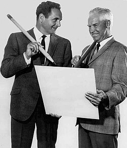
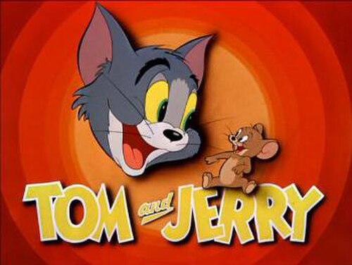
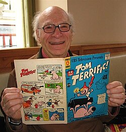
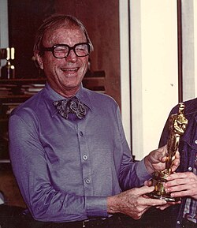

1940—1958
MGM · Hanna and Barbera
The original theatrical shorts by William Hanna and Joseph Barbera. They set the characters, the rhythm of the chase, and the whole visual language.
core · canon
Tom and Jerry barely speak. The music talks for them — and in these shorts it doesn’t just score the chase, it becomes the chase. Every short gets its own cover and storyboard.
▼ Open the program
The original theatrical shorts by William Hanna and Joseph Barbera. They set the characters, the rhythm of the chase, and the whole visual language.
core · canon
Shorts produced in Eastern Europe. They look and sound noticeably different — often called the strangest in the franchise. This era includes the musical short Carmen Get It! (1962).

A different character design — more expressive eyebrows on Tom. The late shorts belong here too: The Cat Above… and Cat and Dupli-cat.
The franchise has no strict canon. But the original MGM shorts of 1940–1958 are considered the gold standard — every later version looks back to them; everything else (TV series, features, crossovers) is a standalone take in the same tradition.
The main score-driven run is the first six issues. It was the classic concert shorts that won Tom and Jerry both statuettes: The Cat Concerto and Johann Mouse. The cartoon is built entirely on music, not on words.
Just listen first. The picture will say the rest.
Warner Classics ↗